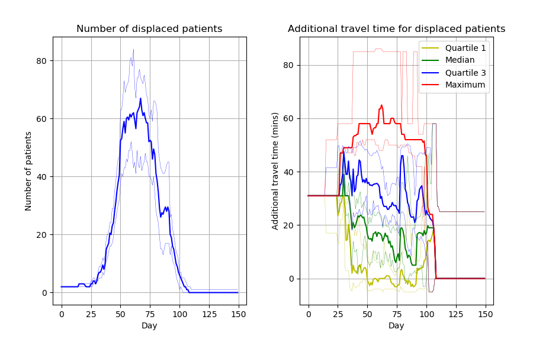
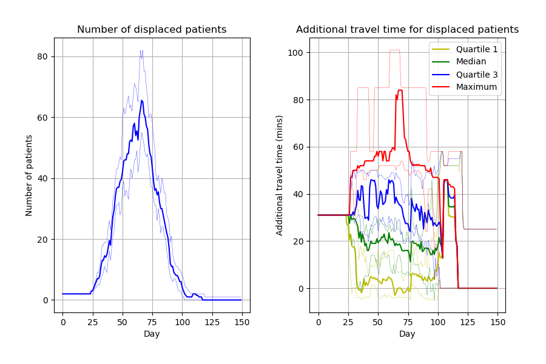
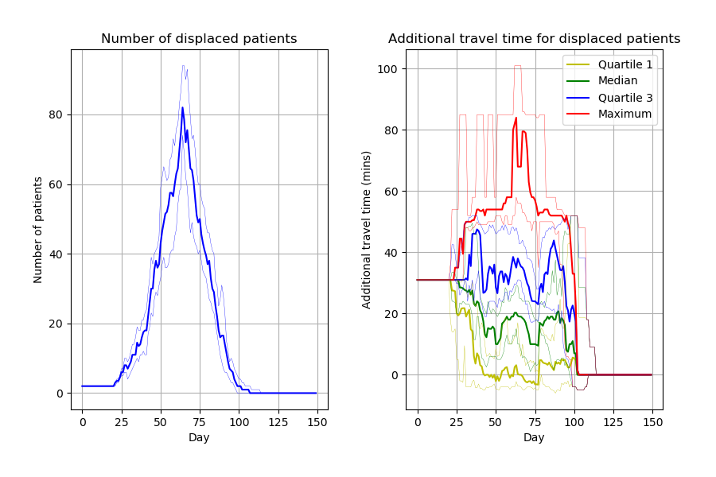
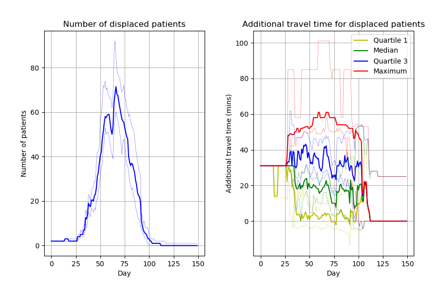
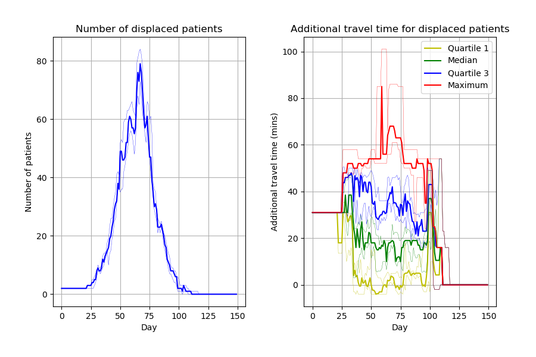
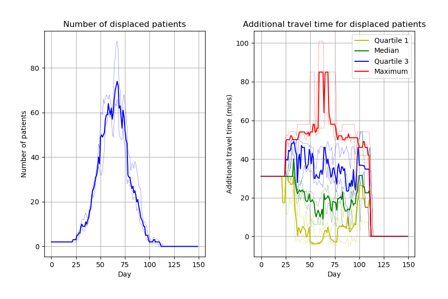

Reviewing code and running model with reproduction of results between runs. Total time used: 4h 36m (11.5%)
Work log
10.24-11.00 - Describe code/data
Looked over code and data from original study, taking notes below.
Notes from looking over their code and data
Code files in main folder:
Capacity_Model_Template.ipynb - explain DES model, input files, code example importing sim_replicate.py and using functions from that
sim_replicate.py - importing from sim/, single and multiple runs of model, and multiple runs of prescribed scenarios, and function to get audit results from multiple runs, and parameters
sim_single.py - single run of model
Other files in main folder:
CONTRIBUTING.md - lists Mike and Tom as the contributors
environment.yaml - conda environment
.gitignore
LICENSE - MIT
README.md - Instructs to use environment and then refer to .ipynb files
Transport_Model_Template.ipynb - Monte Carlo Model
main_vrp.py - importing from vrp/, but otherwise very similar to part of sim_replicate (single and multiple runs, and parameters). VRP = vehicle routing problem?
Tried using version 4, found it worked really well except:
It couldn’t differentiate confidence interval lines from the primary lines, which makes the resulting points hard to use.
The points extracted from these charts don’t necessarily align with the points obtained from the simulation (i.e. line chart draws line through the days but points are at specific locations and not completely continuous).
Hence, I’m going to suggest that I don’t think it is worth trying to use this tool, and that a simpler and more standardised approach would be visual comparison of figures, or overlaying of the figures when possible.
NA: Compile items in scope
All items are figures, so no actions required.
12.10-12.15 Search for code that produces item in scope
Capacity_Model_Template.ipynb creates figures incredibly similar to the article. Can spot a few slight differences likely due to different parameters. Some examples: * Figure 2, slightly wider confidence intervals in the notebook * Figure 4 number of displaced patients, different “bumps†in the line
12.15-12.16 Identify dependencies
From article:
DES on Intel i9-7980XE CPU with 64GB RAM running Ubuntu 19.10 Linux
Python 3.8
Within environment.yaml, can see packages and versions, to create a conda environment.
12.19-12.29 Create environment
Copied environment.yaml file into reproduction. Run the command conda env create --name covid19 --file environment.yaml from terminal within reproduction folder to create environment.
Found that:
Received error CondaEnvException: Pip failed, for installing pip dependencies, Pip subprocess error: ImportError: libffi.so.7: cannot open shared object file: No such file or directory
Noticed it was including Spyder in the environment which is an IDE so removed that.
This was then successful, and built quickly (within 30s). A quick glance over the environment confirmed that it looked to have the correct python version and packages.
13.26-13.52 Reproduction
Copied sim/ and sim_replicate.py into reproduction/.
Copied code cells from Capacity_Model_Template.ipynb.
Error no module named joblib - add this to environment.yaml. Code was archived 22 April 2020, paper was published 13 August 2020. Used date of code archive, looking at https://pypi.org/project/joblib/#history, can see the version closest to prior to that date is 0.14.1 (10 Dec 2019) (as the next is 0.15.0 which is 15 May 2020). Add it to environment.yaml then ran conda env update --file environment.yaml --prune. This fixed the error.
FileNotFoundError: [Errno 2] No such file or directory: ‘output/base_3_month_reps_30_patient_audit.csv’. Not resolved by adding output/ folder.
Protocol suggestion: On reflection, perhaps it would’ve better to copy over the whole code folder into reproduction/ and then modify there, rather than copying over stuff bit by bit?
Switched to doing that -
Kept environment.yaml and example.ipynb, but otherwise copied everything over.
Deleted irrelevant files
Ran again and it worked fine, didn’t get the FileNoteFoundError
Images look similar to their notebook from Zenodo but, as with those figures, slight differences to paper, likely due to parameters.
Untimed: Set up display of their code within the Quarto website
But can’t decide how best to display it - or if it is worth trying to display it all, or better just to suggest to browse the code repository themselves. Feels like an unhelpful distraction at present, and misleading compared to just allowing people to browse the code, so have suggested to change it to just displaying the PDFs and call it a day.
Updated the files accordingly.
14.19-15.12 Reproduction
Original:
Run 1:

Run 2:

Ran again and compared images to see if its varying between runs - it looked quite different! I saved each under new file names so not overwritten
Model parameters input in the notebook look to match the paper (Table 1). Its 30 replications as in the paper too.
Looked through the paper and code for mention of “seed†and “random_state†- found:
parameters.py - UniformParams has optional seed/random_state, generally set to random_state or None.
Thinking differences are defintely down to this. Thinking options are:
Looking in their GitHub history in case they previously used random_state
Run more replications than 30, to see what it settles on
Run 30 replications, with a seed set each time, and then compare each against the article and see what comes closest. Make sure seed was set though! That might be tricky though… as they haven’t established it with one…
Can see there are releases more recent than Zenodo (22 April), which I had used, and the paper (received 28 april 2020, published 13 Aug 2020). All commits since the Zenodo publication was:
None of these would have any impact on results (besides it being re-run). Does confirm correct version of Joblib was used.
Then looked back over older releases, but these were only just prior to the Zenodo publication (first was 20 April) and none use random state etc.
Run more replications than 30
Although it doesn’t match with the paper, I tried increasing replications to see what the figure averaged out to. However, then concluded that wasn’t particularly helpful in trying to get their results (although could be a way of saying that these are “more stable†results - although, it would impact on the confidence intervals and so on - if not able to set a seed).
Modifying script to set a random seed, to make the result I am getting from this code reproducible
Change random_state in parameters.py from None to having a value for each in their class:
NormalParams 1
UniformParams 2
Original:
Run 1 with seeds added:

Run 2 with seeds:

However, this definitely has not fixed the issue! Still varying - and I wouldn’t be able to reproduce my own results twice either.
15.23-16.35 Reproduction
Random seeds
At the moment, I would describe this model as reusable but not reproducible. It was really relatively quick to get the code up and running and see similar results to the paper. But in terms of getting it to match up to the paper, it is pretty much impossible, although I will try to get their via setting random seeds then running it lots of times to try and get a close match.
This is important for STARS framework improvement - that controlling randomness is important for reproducibility. It can also be handy for someone reusing a model, as they may wish to reproduce just to verify that its running properly for them.
And so for each of the studies, if this is a recurring thing that comes up, its seeing where and how to add random seeds in different models and languages, to enable reproducibility.
From this Stack Overflow post, I’m suspicious that perhaps the issue is that I am setting the random state as 1 and 2, which (a) would imply it’s making it the same between each run, but (b) all using the same stream in parallel processing. But it’s set using RandomState.
Trying to google around use of seeds with parallel processing.
Had a chat with Tom about it and he suggested:
He pointed out that NormalParams is not being used, and that it would need to be setting a seed in the class Normal() when you use it in Scenario - e.g. extra parameter at end of here -
requiring_inpatient_random: Distribution = Uniform(0.0, 1.0)
time_pos_before_inpatient: Distribution = Uniform(3,7)
Good example of how set up, would recommend this - https://pythonhealthdatascience.github.io/stars-simpy-example-docs/content/02_model_code/04_model.html#distribution-classes
LLM model generation of seeds
Need seperate random number streams for each time make a distribution to use it.
I thought best option is to switch to using it how it is uses in the treat-sim model docs, as focus here is just modifying code to allow it to reproduce each run.
So next things I did -
Delete the NormalParams and UniformParams classes as not used - checked if still run fine which it did.
Modified the Normal and Uniform so the random number sampling matches up with treat-sim model docs, and Scenario class so it’s similar (class itself is just set up a little differently)
In .ipynb, removed the parameters from Scenario() that were identical to those when Scenario is created (except seed setting)
Then ran it twice again (this time just with 5 replications). Not matching up yet -
Run 1 with new random method:

Run 2:

Timings
import syssys.path.append('../')from timings import calculate_times# Minutes used prior to todayused_to_date =73# Times from todaytimes = [ ('10.24', '11.00'), ('12.10', '12.16'), ('12.19', '12.29'), ('13.26', '13.52'), ('14.19', '15.12'), ('15.23', '16.35')]calculate_times(used_to_date, times)
Time spent today: 203m, or 3h 23m
Total used to date: 276m, or 4h 36m
Time remaining: 2124m, or 35h 24m
Used 11.5% of 40 hours max
Suggested changes for protocol/template
✅ = Made the change.
💬 = Noted to discuss with team.
Protocol:
✅ Change from requiring to make notes about code and data, to just suggesting this. Focus should be on familiarisation rather than record keeping. These notes should just be within the logbook.
✅ Change from requiring search for code that produces scope, to just recommending it (as feel it can be helpful in familiarising, but not a necessity).
✅ Remove sugestion of WebPlotDigitizer etc., and instead suggest standardised approach of visually comparing the figures.
✅ For environment, suggest using the simplest approach - so using their environment file (or creating based on packages), and not worrying about operating system used. Could consider that with regards to troubleshooting though.
✅ Don’t worry about operating system
✅ Keep suggestion about package list and versions using close to publication date. Include how - i.e. for finding packages that were missing, base version date on Zenodo/code archive/github if possible/earlier than the paper - if later than the paper, then base on the paper - or just base on the paper.
✅ To select packages, use the simplest method: looking manually at version history of each package. Can’t find a way to prevent it in Python. Knowing versions of the imported packages is as close as you get to if they provided a yaml file (as even with a yaml file, the dependencies they install alongside may be more recent).
✅ When create environment, this is the first time we might start using and modifying materials, so important to note that we should COPY over any environment stuff into our reproduction folder/, and not directly run scripts in original_study/, those should stay untouched
✅ Recommend that if there are multiple versions of code available (e.g. a GitHub and Zenodo repository), that it is at researcher discretion to choose which is appropriate (for example, if one has later date than publication, then that aligning with publication date should be used).
Change section of reproducing items to:
✅ Emphasise importance of copying over stuff when running (and not working in original_study/)
✅ Reminder to take very detailed notes in the logbook as go along of each copy, change, success, error.
✅ Suggestion to copy outputs (e.g. images, tables) into blog post folder and displaying them in the post, so can easily share where up to at a given point.
✅ Allow troubleshooting step of asking STARS team, and that in these cases, that should be timed and a record should be made of the discussion and any recommendations made.
✅ Add recommendation on what to do if there is no control for randomness with seeds etc. (which anticipate to be likely)
✅ Integrate reproduction success within this (as it is done iteratively as you work, rather than all in one go at the end).
✅ Change figure reproduction success to be less about numbers (as not extracting those), and just about comparison by eye
✅ For all assessment of reproduction success, recommend that doesn’t require perfect match to state that it is successfully reproduced, but instead should be belief of researcher that the differences could likely be down to randomness (if not controlled).
Suggestions to consider for research compendium stage:
💬 Improve README (e.g. repository overview - in this example, it took me a while to realise that “vrp†was vehicle routing problem)
💬 Appropriate seperation of data and code (as per convention for simulation - but ideal if parameters are stored seperately as easier to spot)
💬 Improvements to code and clarity (e.g. PEP-8, comments, docstrings)
💬 Include description of run time for given examples
💬 Remove unused packages
💬 Add testing, focussed on being able to get same results from models with particular runs